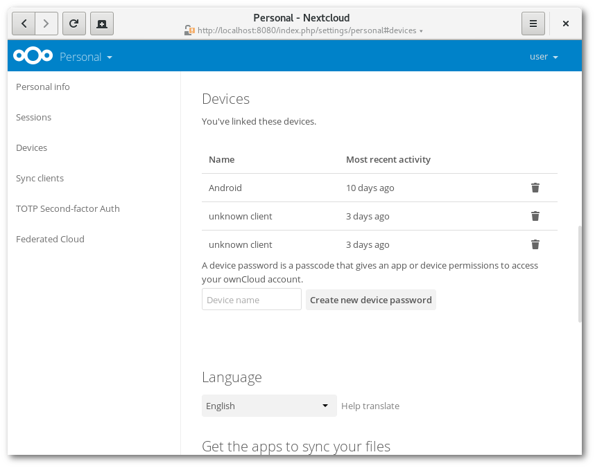

Verbundene Browser und Geräte verwalten
In Ihren persönlichen Einstellungen finden Sie eine Übersicht aller verbundenen Browser und Geräten.
Verbundene Browser verwalten
In der Liste der verbundenen Browser sind alle Browser gelistet, von welchen Sie sich in letzter Zeit in Ihren Account eingeloggt haben.

Um die Sitzung eines Browsers zu schließen, klicken Sie einfach auf das Papierkorb- Symbol neben einem Eintrag in der Liste.
Verbundene Geräte verwalten
In der Liste verbundener Geräte sind alle Geräte und Clients zu sehen, für welche Sie ein App-Passwort erstellt haben.

Mit einem Klick auf das Papierkorb-Symbol können Sie die Verbindung zu einem Gerät trennen.
Unter der Liste finden Sie einen Button, mit welchem Sie ein Geräte-spezifisches Passwort generieren können. Sie können diesem Passwort (oder auch “Token”) einen Namen geben, um dieses später leichter wiederzufinden. Dieses Passwort / Token wird verwendet, um neue Clients zu verbinden. Im Idealfall generieren Sie für jedes Gerät, von dem Sie sich in Ihren Account anmelden, einen eigenen Token. Dies macht es später einfacher, einzelne Geräte aus Ihrem Account abzumelden.

Note
Das Geräte-spezifische Passwort wird nur einmalig angezeigt. Es ist später nicht möglich, es erneut anzuzeigen. Wir empfehlen, das Passwort direkt nach Erstellen am neuen Gerät einzugeben.
Note
Falls Sie Zwei-Faktor-Authentifizierung verwenden, sind Geräte- spezifische Passwörter die einzige Möglichkeit, um neue Clients hinzuzufügen. Clients können dann nicht mit Ihrem Login-Passwort verwendet werden.